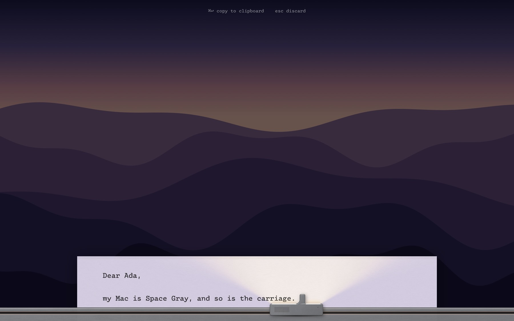
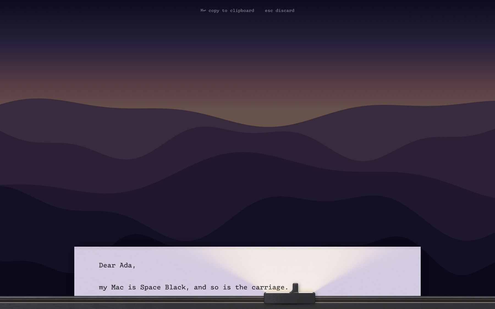
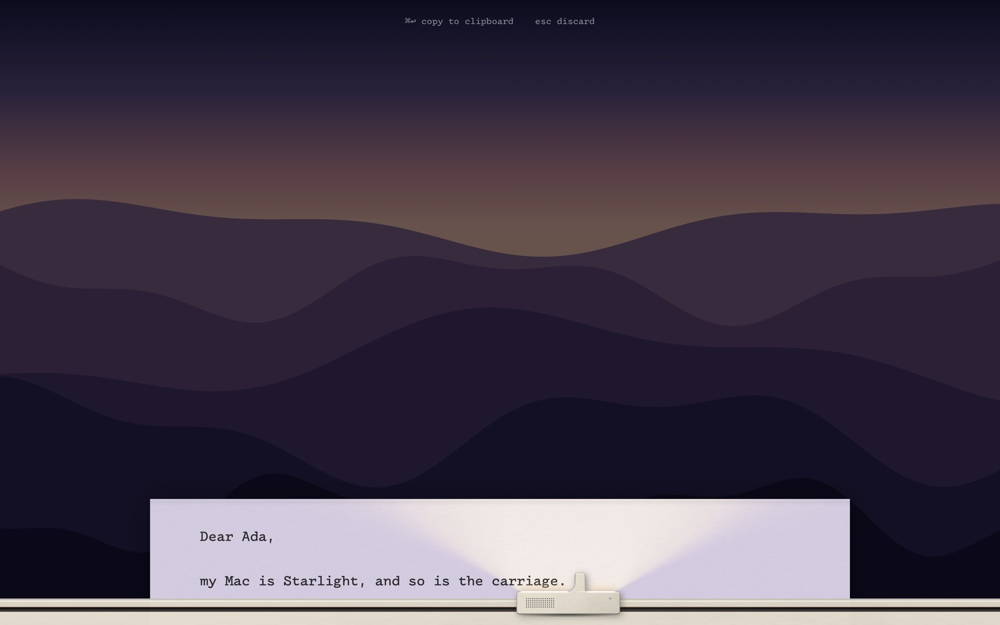
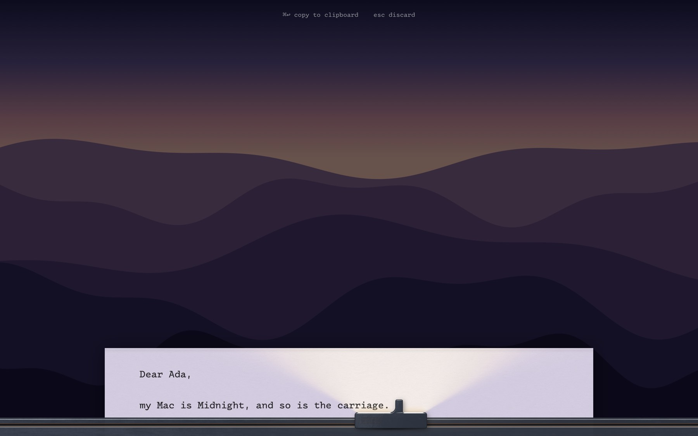
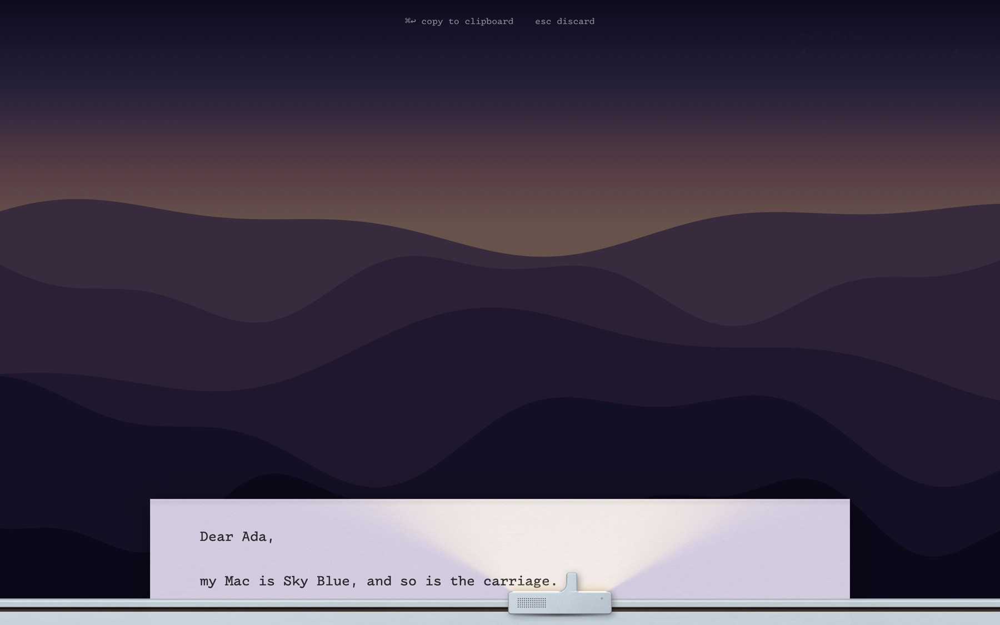
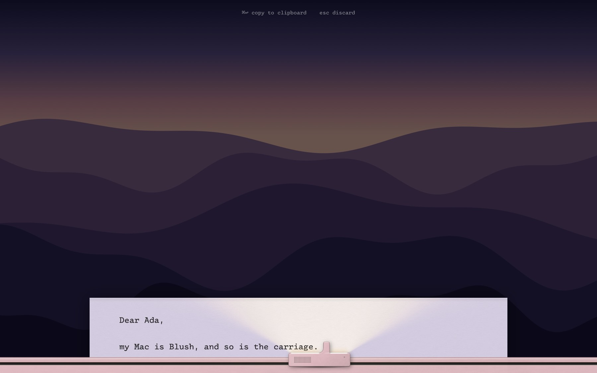
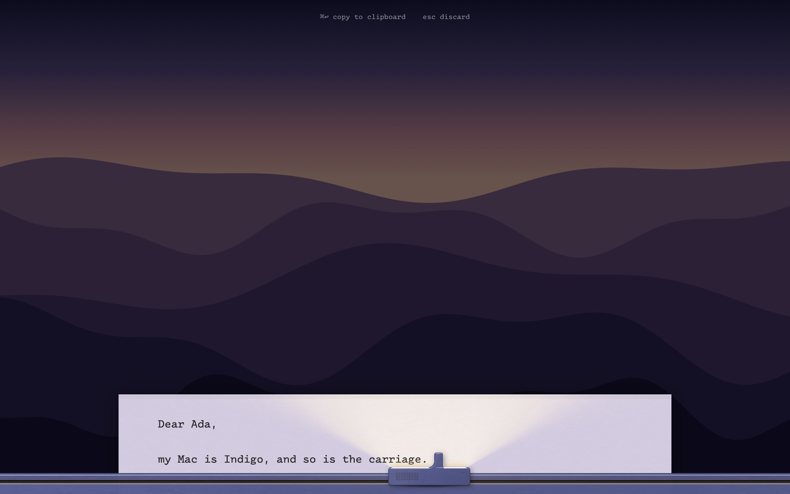
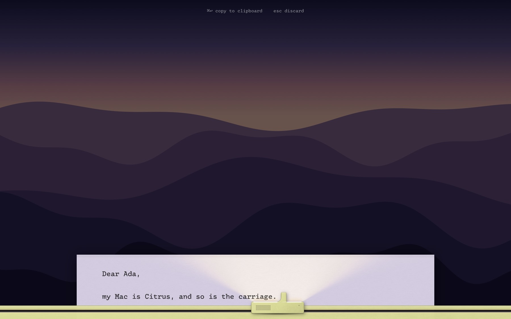

Just you and the words.
In any app.
For the difficult mail, the cover letter, the prompt, and every other text that deserves your full attention.
A mail, a Word document, a form in the browser, a chat: wherever your cursor is, press a key and a sheet of paper rolls up in front of your desktop. No windows, no tabs, only the page. When you are done, the text goes back where your cursor was.
Write first. Send later.
Most text today is written in the place where it is sent: under the mail you answer, next to the chat that shows “typing…”, in a browser full of tabs. Writing and sending happen in the same spot, so we write in a hurry. Typewriter separates the two. First you write, alone with the page. Then the text goes where it belongs.
1Open
Click into any text field, then press ⌥ Space. You can choose another shortcut in the settings. Or choose Open Typewriter from the T in the menu bar.
2Type
The carriage moves with each key. Backspace removes a letter without a trace. Accents and other input methods work as usual.
3Send
The page closes and the text goes into the field you came from: a chat, a mail, the Terminal, the address bar. If there was no field, it goes to the clipboard.
I wanted something that imitated the spirit of typewriters, not the literal look, but I wasn’t sure such a thing was possible. To avoid looking silly it had to be designed as if for a computer, but somehow incorporate the logic of typewriters.
Typewriter tries the same with the whole machine. There is no ink and no platen, and no real typewriter had a lamp in its carriage. What it keeps is the logic: one page, one line at a time, and words that leave only when they are done.
The color of your Mac.
Typewriter reads the housing color of your Mac and builds the carriage and the rail to match. Want another one? Press ⌘ ← or ⌘ → on the page.








Rose Gold
And the sound to go with it.
Pick one in the settings.
Thermal
A soft hiss for each letter, a low purr when the head moves. Calm and warm.
Electric
An electric office typewriter: short keys, a motor that returns the carriage.
Mechanical
Type bars, a bell at the margin and a real carriage return.
None
Only the light and the letters.
Nothing between you and the text.
Typewriter does not replace the app you write for. It gives you a quiet place to write, then hands the text over.
Any app
Mail, Word, Pages, Notion, Slack, a text box in the browser, the Terminal. If it has a text field, Typewriter can write into it.
The whole screen
No windows, no toolbar, no tabs. Only the page, the letters and the light of the lamp.
No notifications
Turn on Do Not Disturb while writing in the settings. It comes on with the page and goes off when you close it. A Focus that was on before stays on.
Get it.
Free. Paste the line below into the Terminal.
curl -fsSL https://typewriter.gnass.buzz/install.sh | shIt installs Typewriter into the Applications folder in your home folder and opens it. Look for the T in the menu bar. When macOS asks, allow Accessibility, so that Typewriter can insert your text. Typewriter is not signed with an Apple developer certificate; apps installed from the Terminal get no warning from macOS. You can read the script first.
Install without the Terminal
- Download Typewriter.zip and move
Typewriter.appinto your Applications folder. - Open it. macOS says that it cannot check the app. Click Done.
- Open System Settings → Privacy & Security. Near the bottom, click Open Anyway next to Typewriter.
- Open the app again and confirm. You only do this once.
Build from source
You need the Xcode Command Line Tools.
git clone https://github.com/fgnass/typewriter && cd typewriter && ./build.sh install
Questions.
What happens to my text?
It goes into the field you came from, and nowhere else. Typewriter never saves it to disk. Only the last page stays in memory, so that you can get it back with Copy Last Page, until you quit the app. The app has no account and no analytics, and it never connects to the internet. Details are on the privacy page.
Why does it need Accessibility?
To insert the text, Typewriter puts it on the clipboard, gives the focus back to the app you came from and presses ⌘ V for you. Then it puts your old clipboard back. macOS allows such a key press only for apps with the Accessibility permission. Typewriter also uses it to see if the focus is in a text field.
Without the permission, Typewriter still works: the text goes to the clipboard, and you paste it yourself.
The text did not arrive
Open System Settings → Privacy & Security → Accessibility and make sure that Typewriter is on. If it is on but nothing happens, turn it off and on again. Your text is not lost: choose Copy Last Page from the T in the menu bar.
Can I use another shortcut?
Yes. Open the settings with ⌘ , on the page, or from the T in the menu bar, click the shortcut and press the keys you want. The arrow next to it has a few suggestions that macOS does not use, such as ⌃ and the key left of 1.
Why does Do Not Disturb need a shortcut?
macOS lets only its own apps turn a Focus on or off. The Shortcuts app can do it, so Typewriter makes a small shortcut named Typewriter Focus for this. When you turn on Do Not Disturb while writing, Shortcuts asks once if you want to add it. You can open it in Shortcuts and see each step.
When the page opens, the shortcut turns on Do Not Disturb, but only if no Focus is on. When the page closes, Typewriter turns it off again, but only if it turned it on itself.
How do I remove it?
Choose Quit from the T in the menu bar and move ~/Applications/Typewriter.app to the Bin. Then remove Typewriter from the Accessibility list in System Settings. If you added the Typewriter Focus shortcut, delete it in Shortcuts.